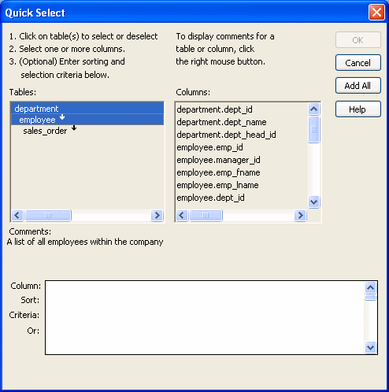
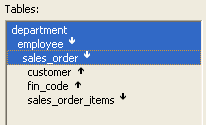
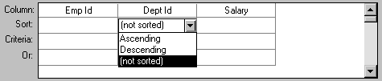
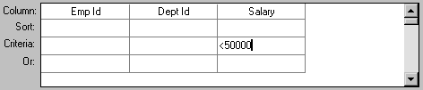
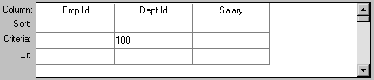
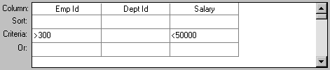
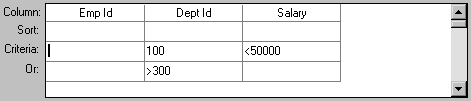
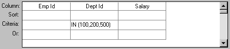
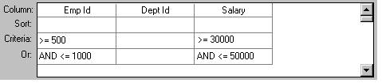
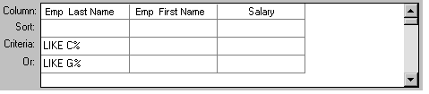

The easiest way to define a data source is using Quick Select.
 To define the data using Quick Select:
To define the data using Quick Select:
Click Quick Select in the Choose Data Source dialog box in the wizard and click Next.
Select the table that you will use in the DataWindow object.
For more information, see "Selecting a table".
Select the columns to be retrieved from the database.
For more information, see "Selecting columns".
(Optional) Sort the rows before you retrieve data.
For more information, see "Specifying sorting criteria".
(Optional) Select what data to retrieve.
For more information, see "Specifying selection criteria".
Click the OK button in the Quick Select dialog box.
You return to the wizard to complete the definition of the DataWindow object.
When you choose Quick Select as your data source, you cannot:
To use these options when you create a DataWindow object, choose SQL Select as your data source. If you decide later that you want to use retrieval arguments, you can define them by modifying the data source. For more information, see Chapter 19, "Enhancing DataWindow Objects ."
When you choose Quick Select, the Quick Select dialog box displays. The Tables box lists tables and views in the current database.
 Displaying table comments To display a comment about a table, position the pointer on
the table and click the right mouse button or select the table.
Displaying table comments To display a comment about a table, position the pointer on
the table and click the right mouse button or select the table.
The DBMS determines what tables and views display. For some DBMSs, all tables and views display, whether or not you have authorization. If you select a table or view you are not authorized to access, the DBMS issues a message.
For ODBC databases, the tables and views that display depend on the driver for the data source. Adaptive Server Anywhere does not restrict the display, so all tables and views display, whether or not you have authorization.
When you select a table, the table's column names display in the Columns box, and any tables having a key relationship with the selected table display in the Tables box. These tables are indented and marked with an arrow to show their relationship to the selected table. You can select any of these related tables if you want to include columns from them in the DataWindow object.

An arrow displays next to a table to indicate its relationship to the selected table. The arrow always points in the many direction of the relationship—toward the selected table (up) if the selected table contains a foreign key in the relationship and away from the selected table (down) if the selected table contains a primary key in the relationship:

In this preceding illustration, the selected table is sales_order. The Up arrows indicate that a foreign key in the sales_order table is mapped to the primary key in the customer and fin_code tables. The Down arrow indicates that the sales_order_items table contains a foreign key mapped to the primary key in the sales_order table.
The column names of selected tables display in the Columns box. If you select more than one table, the column names are identified as:
tablename.columnname
For example, department.dept_name and employee.emp_id display when the Employee table and the Department table are selected.
 To return to the original table list Click the table you first selected at the top of the table
list.
To return to the original table list Click the table you first selected at the top of the table
list.
You can select columns from the primary table and from its related tables. Select the table whose columns you want to use in the Tables box, and add columns from the Columns box:
As you select columns, they display in the grid at the bottom of the dialog box in the order in which you select them. If you want the columns to display in a different order in the DataWindow object, select a column name you want to move in the grid and drag it to the new location.
In the grid at the bottom of the Quick Select dialog box, you can specify if you want the retrieved rows to be sorted. As you specify sorting criteria, PowerBuilder builds an ORDER BY clause for the SELECT statement.
 To sort retrieved rows on a column:
To sort retrieved rows on a column:
Click in the Sort row for the column you want to sort on.
PowerBuilder displays a drop-down list:

Select the sorting order for the rows: Ascending or Descending.
You can specify as many columns for sorting as you want. PowerBuilder processes the sorting criteria left to right in the grid: the first column with Ascending or Descending specified becomes the highest level sorting column, the next column with Ascending or Descending specified becomes the next level sorting column, and so on.
If you want to do a multilevel sort that does not match the column order in the grid, drag the columns to the correct order and then specify the columns for sorting.
You can enter selection criteria in the grid to specify which rows to retrieve. For example, instead of retrieving data about all employees, you might want to limit the data to employees in Sales and Marketing, or to employees in Sales who make more than $80,000.
As you specify selection criteria, PowerBuilder builds a WHERE clause for the SELECT statement.
 To specify selection criteria:
To specify selection criteria:
Click the Criteria row below the first column for which you want to select the data to retrieve.
Enter an expression, or if the column has an edit style, select or enter a value.
If the column is too narrow for the criterion, drag the grid line to enlarge the column. This enlargement does not affect the column size in a DataWindow object.
Enter additional expressions until you have specified the data you want to retrieve.
 About edit styles If a column has an edit style associated with it in the extended
attribute system tables (that is, the association was made in the Database painter),
if possible, the edit style is used in the grid. Drop-down list
boxes are used for columns with code tables and columns using the
CheckBox and RadioButton edit styles.
About edit styles If a column has an edit style associated with it in the extended
attribute system tables (that is, the association was made in the Database painter),
if possible, the edit style is used in the grid. Drop-down list
boxes are used for columns with code tables and columns using the
CheckBox and RadioButton edit styles.
You can use these SQL relational operators in the retrieval criteria:
Because = is the default operator, you can enter the value 100 instead of = 100, or the value New Hampshire instead of = New Hampshire.
You can use the LIKE, NOT LIKE, IN, and NOT IN operators to compare expressions.
Use LIKE to search for strings that match a predetermined pattern. Use NOT LIKE to find strings that do not match a predetermined pattern. When you use LIKE or NOT LIKE, you can use wildcards:
Use IN to compare and include a value that is in a set of values. Use NOT IN to compare and include values that are not in a set of values. For example, the following clause selects all employees in department 100, 200, or 500:
SELECT * from employee
WHERE dept_id IN (100, 200, 500)
Using NOT IN in this clause would exclude employees in those departments.
You can use the OR and AND logical operators to connect expressions.
PowerBuilder makes some assumptions based on how you specify selection criteria. When you specify:
To override these defaults, begin an expression with the AND or OR operator:
| Operator | Meaning |
|---|---|
| OR | The row is selected if one expression OR another expression is true |
| AND | The row is selected if one expression AND another expression are true |
This technique is particularly handy when you want to retrieve a range of values in a column. See example 6 below.
The first six examples in this section all refer to a grid that contains three columns: EmpId, DeptId, and Salary.
The expression >50000 in the Criteria row in the Salary column in the grid retrieves information for employees whose salaries are less than $50,000.

The SELECT statement that PowerBuilder creates is:
SELECT emp_id, dept_id, salary
FROM employee
WHERE salary < 50000
The expression 100 in the Criteria row in the DeptId column in the grid retrieves information for employees who belong to department 100.

The SELECT statement that PowerBuilder creates is:
SELECT emp_id, dept_id, salary
FROM employee
WHERE dept_id = 100
The expression >300 in the Criteria row in the EmpId column and the expression <50000 in the Criteria row in the Salary column in the grid retrieve information for any employee whose employee ID is greater than 300 and whose salary is less than $50,000.

The SELECT statement that PowerBuilder creates is:
SELECT emp_id, dept_id, salary
FROM employee
WHERE emp_id >300 AND salary <50000
The expressions 100 in the Criteria row and >300 in the Or row for the DeptId column, together with the expression <50000 in the Criteria row in the Salary column, retrieve information for employees who belong to:

The SELECT statement that PowerBuilder creates is:
SELECT emp_id, dept_id, salary
FROM employee
WHERE (dept_id = 100 AND salary < 50000)
OR dept_id > 300
The expression IN(100, 200, 500) in the Criteria row in the DeptId column in the grid retrieves information for employees who are in department 100 or 200 or 500.

The SELECT statement that PowerBuilder creates is:
SELECT emp_id, dept_id, salary
FROM employee
WHERE dept_id IN (100, 200, 500)
This example shows the use of the word AND in the Or criteria row. In the Criteria row, >=500 is in the EmpId column and >=30000 is in the Salary column. In the Or row, AND <=1000 is in the EmpId column and AND <=50000 is in the Salary column. These criteria retrieve information for employees who have an employee ID from 500 to 1000 and a salary from $30,000 to $50,000.

The SELECT statement that PowerBuilder creates is:
SELECT emp_id, dept_id, salary
FROM employee
WHERE (emp_id >= 500 AND emp_id <= 1000)
AND (salary >= 30000 AND salary <= 50000)
In a grid with three columns: Emp Last Name, Emp First Name, and Salary, the expressions LIKE C% in the Criteria row and LIKE G% in the Or row in the Emp Last Name column retrieve information for employees who have last names that begin with C or G.

The SELECT statement that PowerBuilder creates is:
SELECT emp_last_name, emp_first_name, salary
FROM employee
WHERE emp_last_name LIKE 'C%'
OR emp_last_name LIKE 'G%'
You can allow your users to specify selection criteria in a DataWindow object using these techniques at runtime:
For more information, see the DataWindow Programmer's Guide .